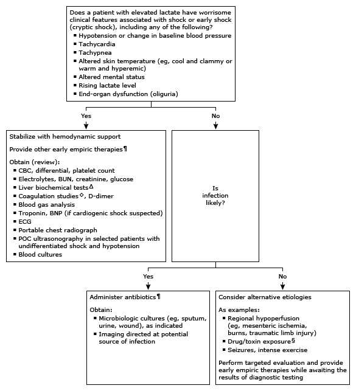

ALT: alanine aminotransferase; aPTT: activated thromboplastin time; AST: aspartate aminotransferase; BUN: blood urea nitrogen; BNP: B-type natriuretic peptide; CBC: complete blood count; ECG: electrocardiogram; POC: point-of-care; PT: prothrombin time.
* The normal reference range is approximately 0.7 to 2.1 mmol/L (6.3 to 18.9 mg/dL). Interpretation of a specific abnormal test result should be based upon the reference range reported by the laboratory. Elevated lactate levels above upper limit of normal are a sensitive, but not specific, tool for the diagnosis of shock.
¶ Life-saving interventions should not be delayed while awaiting the results of diagnostic testing.
Δ Including ALT, AST, bilirubin, and albumin.
◊ PT and aPTT.
§ Examples of drug/toxin exposures include: